In terms of weaponry, a rocket is an unguided jet-propelled missile in which forward motion results from reaction to the ejection of matter in the opposite direction at high velocity. The well documented rocket equation, which we will derive, gives the relationship between the change in velocity of the missile, its relative exhaust velocity and its change in mass. The unguided nature of rockets is what makes them differ from missiles. The use of rockets in artillery is thought to date back as early as medieval China, though didn't become a prominently deployed weapon until the 20th century.
Ancient Chinese legend has it that a local official, Wan Hu, used a chair mounted on 47 bamboo rockets to lift off from the ground. He reportedly flew to the moon, earning him the titles of 'first astronaut' and the 'man on the moon'. Factual evidence to back up the existence of this rocket chair is unsurprisingly limited.
Fig 1: Wan Hu.
The first documented account of the use of rockets in warfare was during the battle of Kai-Keng, between the Mongols and the Chinese in 1232. The Chinese were able to hold the Mongols at bay using a very basic form of solid fuelled rocket. This consisted of a hollow tube capped at one end filled with gunpowder and attached to a stick. By treating the air inside the tube as an ideal gas, we can see that the ignition of gunpowder will cause an increase in temperature and hence pressure on the tube.
Due to the conservation of momentum, this causes a thrust, hence propelling the rocket in the direction of the capped end. The long stick was a way of guiding the rocket somewhat. These weapons are comparable with modern day fireworks. Rockets are said to have been introduced to Europe in the 13th century by the Mongol conquests. A more powerful form of gunpowder was developed by British scientist Roger Bacon. This increased the range of rockets, whilst Jean Froissart created the launch pad by firing rockets through tubes to improve their accuracy.
In the British colonial wars of the late 1700s, Indian rocket fire was used against the British armies. The first iron-cased rockets were first developed in 1772 to be used against the British in the Anglo-Mysore Wars. This new idea of casing the propellant was more advanced than anything the Brits had seen in rocket weaponry, increasing massively both the range and thrust. The British Colonel Congreve, inspired by this technology, began to construct his own model of rocket for the British forces. This 'Congreve rocket' consisted of a new mixture of propellant and had improved aerodynamics due to an iron tube with a conical nose. Congreve rockets had a range of up to 5km, and were used by the British in the Napoleonic Wars. Both carbine ball filled rockets for land targets and incendiary rockets used against ships were developed. Despite their range and power, the Congreve rockets still had the weakness of all rocket weapons to date: inaccuracy.
Nebelwerfer, meaning 'smoke mortar', were a series of German weapons developed in the run up to WWII. They got their name as a disinformation strategy to mislead observers into thinking Germany was simply producing devices to create smoke screens (so as not to violate the Treaty of Versailles).
They were designed with the intention of delivering poisonous gas and smoke shells, as well as more traditional explosive ordinance.
Built by the Soviet Union in the late 1930s, this well-known rocket artillery was originally designed as a cheap alternative to conventional artillery, and was first used in the opening month of the German invasion of the USSR, Operation Barbarossa. This truck-mounted 132mm launcher could fire as many as HOW MANY? warheads distances of more than six miles (9 km) in 10 seconds. With the capability of showering vast areas with a dense hail of high explosives and then speeding to safety before enemy guns could even get a fix on them (known as ‘shoot and scoot’), the Germans feared the Katyusha. Its highly recognisable wailing sound when fired earned it the nickname ‘Stalin’s Organ’ from the Wehrmacht.
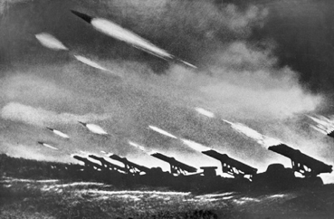Fig 2: The Katyusha missile system.
Based on the success of the air-to-air combat of WWI, the Katyusha was first designed to be fired from warplanes rather than ground vehicles. The 5 foot, 93 pound rockets would be fired from the ground via steel racks consisting of multiple adjacent launch rails. The entire assembly could be bolted onto the back of ordinary utility trucks. The launch vehicles were known as BM-13s. It only took 4 such trucks to release the firepower equal to 75 field guns onto a 1.5 square-mile patch of ground in under 30 seconds. Despite this, the weapon had its drawbacks, the main one being its inaccuracy. The reloading of the weapon was also a major issue with this sometimes taking up to an hour.
The name ‘Katyusha’ was not the official name of the weapon, being the Russian equivalent of the name ‘Katie.’ Being manufactured by the ‘Voronezy Komintern’ plant, they often bore a large ‘K’ on the side, which troops joked stood for ‘Katyusha’ based on the popular 1938 wartime ballad, about a woman who is separated from her lover during wartime.
Due to the success of the Katyusha model, many variants were subsequently made. Models with launchers fitted to trucks, jeeps and even tanks were constructed. Although seen to have only been introduced as a temporary alternative to conventional artillery, the Katyusha proved so successful that the Red Army continued to refine the design into the 1950s and 60s. A well-known descendent was the BM-21, commonly known as the ‘Hail,’ and could fire up to 40 128mm M-21 warheads in under 20 seconds. These much improved launchers had a range of 20 km.
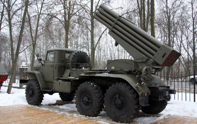Fig 3: The BM-21 system.
On 25th February 1991, 28 American soldiers were killed and a further 100 severely injured when an Iraqi Scud missile hit the army barracks in Dahran, Saudi Arabia. This was due to the failure of the American Patriot Missile to track and intercept the Iraqi scud missile due to, as claimed by officials, a ‘software problem.’ It was later revealed that this failed tracking attempt was actually down to an inaccurate calculation caused by arithmetic errors in the computer system, specifically in the conversion of binary and decimal numbers.
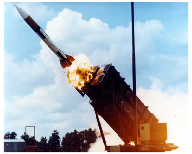Fig 4: The Patriot missile system.
The defence system consisted of an electronic detection system, known as the ‘range gate.’ This would calculate the location at which the Patriot was to find and collide with a target. To calculate where the Patriot missile was to aim for, it would calculate its location based on the velocity of the Scud and the last time it was detected by the radar.
The time was saved by the computer's clock in a 24 bit binary register, and measured to a tenth of a second. 0.1 can not be expressed exactly in binary, leading to an error of 0.000000095.

Any numbers that cannot be expressed as a power of two are not exactly expressible in binary. The number 1/10 in a 24 bit binary register is equivalent to the expansion:
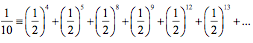By cutting this off at 24 bits, an error of around 0.000000095 was introduced. Despite seeming relatively small, this had an effect on large multiplications. Over 100 hours, this error amounts to:
On the day of the disaster, the battery of the Patriot system had been running for 100 hours with no breaks. Since there are 10 clock cycles in a second, the inaccuracy over this time had built up to 0.34 seconds.
In this time the Scud, travelling at a speed of 1676km/h, covers over half a kilometre. The shift calculated in the range gate, which considered 137m to be out of range, came out to be 687m. This meant the Scud was not targeted and the Patriot system did not fire.
Newton's laws of motion are:
Derived by Russian scientist Konstantin Tsiolovesky in 1903, this equation describes the motion of any vehicle or missile that follows the basic principle of rockets, being a device can self-accelerate by expelling part of its mass with high velocity, due to the conservation of momentum. The equation is:
Consider a simple rocket containing all of its unburnt propellant. According to Newton's 2nd law, the resultant force on an object, F is equal to the product of its mass m and its acceleration a, that is:
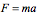This is the equivalent of stating that the force on the object is equal to its rate of change in momentum p:
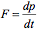p = Mv where M is the instantaneous mass of the rocket and v is its velocity. This means we can rewrite Newton's 2nd law as:
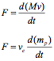where ve is the effective exhaust velocity and mp is the mass of the propellant. Combining the two equations, we get:
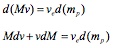In assuming we move with the rocket, v = 0, so:
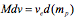The mass M of the rocket and mp of the propellant, are functions of time, that being:
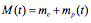Therefore, we see that:
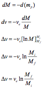Here, Δv is the change in velocity, ve is the exhaust velocity, mi and mf are the initial and final masses of the vehicle. The term 'ln' refers to the natural logarithm.
Sometimes we are more interested in the thrust created by the rocket and its subsequent acceleration, ar. Expressing this acceleration as the derivative of vr, we see that:
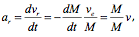where M is the mass flow rate. From Newton's 2nd law, the thrust force Fr is given by:
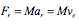This shows that a rocket creates thrust either by expelling more mass or by increasing the velocity of expulsion ve. By plotting the rocket equation (in terms of mass ratio against the Δv/ve ratio) we can see an exponential relationship between the amount of fuel required and the desired change in velocity, Δv:
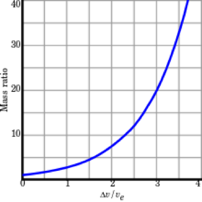Fig 5: Plot of the rocket equation.